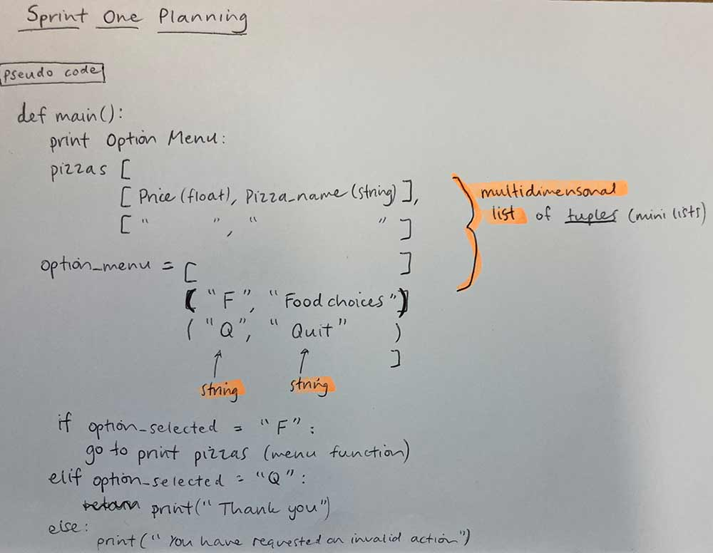
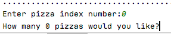

Brief
To create a program which allows a user to enter customer details (address, name, pickup/delivery requirements and their pizza order).
This information, including delivery details, itemised order and total cost, will be stored and displayed to the user in a receipt format.
Sprint One

Sprint board

Git commit

Test to show the basic program I created in Sprint 1

Reflection
This first sprint was successful as I created a basic program which prints the main menu, giving the user the option to either view the pizza menu or quit.
Sprint Two
In Sprint Two I designed a program which allows the user to enter the customer's pizza order and stores this information. I created an add function in this sprint to add a new pizza to the order. When this function is called, it prints the pizza options, requests user input of the index number of the pizza type the user would like to order, and requests an integer entry for how many of that pizza they would like. Finally, it prints their order so far in a simple format.
Sprint board

Testing
Frau:
After Frau tested my programme, in confirming whether they want to quit, instead of having Q and B, I used ‘Y’ and ‘N’ because Frau tried to enter those commands.
I also found out I needed to clarify what an index number is, so I added an extra column heading saying “index” to give frau an idea of what she needs to enter when asked to choose a pizza.
Errors
Below are some Errors I found when testing Sprint Two, and how I addressed/or plan to address them.
Index out of range:
Solution to error:
I will address this in Sprint Three, by creating a validated integer entry function which does not allow the user to enter a pizza index that is out of range, and will give feedback.
Using the pizza's colloquial name (rather than index) when printing messages to the user
Solution to error:

Re-asks to "Start" order midway through

Solution to error:

Reflection
Sprint Three
Plan

Sprint board
Validation errors that the validated_integer and validated_string functions in this sprint solved:
- If the user enters a string when an integer is requested
- If the user enters an integer when a string is requested
- If the user enters an string that isn't one of the menu options
- If the user tries to enter more pizzas than is allowed
- More specific feedback explaining index number and ordering limitations
- Validated totals function - max of 50 pizzas ordered overall


Totals function
I created a testing option in the menu to understand program and quickly show that my_order is being added to, appended

Testing finished totals function

Iterative decision of how to create a validated totals function: 1st Option and 2nd option

Failed test:

Final validated totals function:

Git commit and git history at the end of Sprint 3

Reflection
Design decisions


Things to address in the next sprint:
When the list is empty (the user hasn't ordered any food yet), the review option/function should print a customised message to say "You haven't begun your order yet".
Sprint Four
Plan

Calculate the cost of each type of pizza

Calculate the total cost of order (price function)

Calculate the GST and include as part of receipt

Reflection (+ anything about relevant implications)
What went right:
- Made a temp list for easy testing and included a test menu option to speed up my design process
- Imitated the formatting of an actual Countdown reciept


What didn't go right:
Things to address in the next sprint:
- Allows the user to enter different currencies (relates to the relevant implications of cultural and accessibility)
- In future sprints I am planning to carry out more validations. One example, is disallowing the user from entering one type of pizza twice eg. India - 2, then India - 5. Instead I should decide (iterative decision) as to whether I validate this to print a message saying you can't do this, or create a function to make a sum of all the India pizzas, regardless of what stage of the order they were entered.
Overall Project backlog at this point

Code checker - at the end of Sprint 4


Git commit and git history at the end of Sprint 4